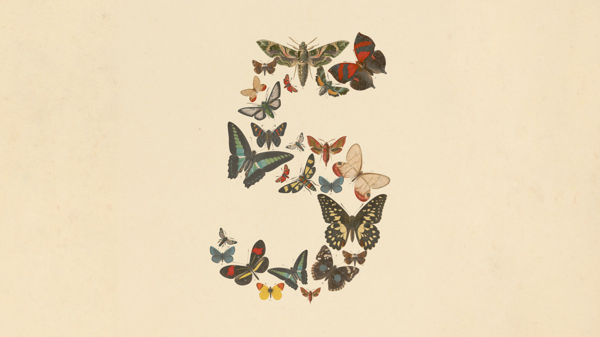
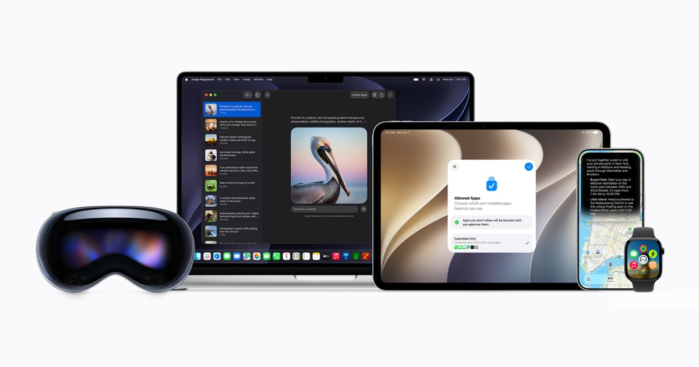

モデル・資本・規制が
同時に動いた一週間
Anthropic が初の「Mythos 階級」を一般公開した直後、米政府が停止を指令——フロンティアモデルの「公開を誰が決めるのか」が前面に出た週。上場レース、外部モデル依存、安全性への警鐘も一斉に動いた。
2026年6月8日〜14日は、生成AIのモデル競争・資本市場・規制・安全性が一斉に動いた象徴的な一週間だった。Anthropic は初めて最上位「Mythos」階級を一般に開放した（Fable 5）が、公開からわずか3日で米政府の輸出管理指令により全停止に追い込まれた。同じ週に OpenAI が IPO を機密提出し、Apple は Gemini 製の新 Siri で外部モデル依存へ踏み切った。本稿はこの週の主要トピックを一望する。
30秒でわかる、今週の要点
モデル・上場・プロダクト・規制・安全性。動いた軸を4点で。
Mythos 階級が初公開、3日で政府が停止
Anthropic が Fable 5 / Mythos 5 を公開。だが公開72時間後に米政府の輸出管理指令で全停止に。
OpenAI、IPO を機密提出
Anthropic に続き OpenAI も SEC へ S-1 を機密提出。AI 大手の上場レースが本格化。
Apple、Gemini 製の新 Siri を発表
WWDC で再構築した「Siri AI」を披露。土台に外部モデル（Google Gemini）を据える転換。
安全性への警鐘も同じ週に
Anthropic が「制御困難リスク」を公開警告し、業界全体の「ブレーキ」整備と規制強化を提言。
Claude Fable 5 / Mythos 5——公開72時間で停止
今週最大のトピック。最上位「Mythos」階級が初めて一般に渡り、そして米政府の指令で消えた。
Anthropic は 6/9、Opus 階級の上位に位置する「Mythos」階級のモデルを初めて一般公開した。同一の基盤モデルを、安全分類器付きの公開版「Claude Fable 5」と、分類器を外した制限版「Claude Mythos 5」（Glasswing パートナー限定）として同日リリース。だが公開からわずか3日後の 6/12（金）夜、米政府の輸出管理指令により全アクセスが停止されるという異例の展開となった。

性能 Anthropic 自己公表値
per 100万トークン — 入力も出力も ×2.0
Mythos 階級のモデルは、重大なリスクを伴う閾値に達した。 “Mythos-class models have reached a threshold where they present significant risks.” Anthropic 公式
この一件は別ページで詳説しています — 深掘り：公開72時間で消えた最強モデル →
OpenAI、米 SEC へ IPO を機密提出
2026/06/08 · 経営・上場。Anthropic に続き、AI 大手の上場レースが本格化した。
OpenAI が 6/8、米証券取引委員会（SEC）に機密ベースの S-1（IPO 申請書草案）を提出したとブログで表明した。1週間前に同じく機密提出した Anthropic（評価額約 9,650 億ドル）に続く形で、AI 大手の上場レースが本格化。同社は「リークを見越して先回りで公表した」「時期は未定」と説明している。
直近評価額の目安 報道・観測値
機密 S-1 を最近提出した。リークするだろうから、こちらから公表しておく。 “We recently submitted a confidential S-1. We expect it to leak so we're just announcing it.” OpenAI の表明（TechCrunch 報道）
Apple WWDC 2026——Gemini 製「Siri AI」を発表
2026/06/08 · プロダクト。自社 AI にこだわってきた Apple が、土台に外部モデルを据えた。
Apple が WWDC 2026 の基調講演で、再構築した会話型アシスタント「Siri AI」を披露した。クラウド側の知能には、Apple のデータセンター上で動作する Google Gemini のカスタム版を採用（年額約 10 億ドルのライセンスと報道）。自社 AI にこだわってきた Apple が土台に外部モデルを据える象徴的な転換となった。なお DMA（デジタル市場法）の影響で、EU では iOS 27 時点での Siri AI 提供が見送られる。ティム・クック CEO にとって最後の基調講演でもあった。

Siri は、必要なものを見つけ、より多くをこなす、はるかに有能なアシスタントになった。 “Siri is now a profoundly more capable assistant that helps you find what you need and gets more done.” — Apple VP Mike Rockwell Apple Newsroom
Google、拡散言語モデル「DiffusionGemma」を無償公開
2026/06/10〜11 · オープンモデル。自己回帰ではなく「拡散」でテキストを生成する実験的アーキテクチャ。
Google が、従来の自己回帰方式ではなく拡散（diffusion）技術でテキストを生成するオープンウェイトモデル「DiffusionGemma」を公開した。テキストをブロック単位で同時生成することで、従来手法より大幅に高速な生成速度を実現し、生成中の双方向推論を可能にする。構造化された出力やコード関連タスクで有用とされる。ツールや展開サポートはまだ未成熟だが、LLM の代替アーキテクチャの実験的取り組みとして注目される。
ブロック単位で同時生成
1トークンずつ左から生成する自己回帰と違い、ブロックをまとめて生成。生成中の双方向推論が可能。
ツール・展開サポートはこれから
エコシステムは発展途上。構造化出力・コード系での有用性が期待される実験段階。
Anthropic、「制御困難リスク」を公開警告／規制強化を提言
2026/06/08 週 · 安全性・政策。Fable 5 の安全設計、そして政府介入とも密接に関わる動き。
Anthropic が今週、自社の AI が急速に高度化し、人間の監視なしに自己改善する能力を持ちかねないと異例の公開警告を出した。人間が追えない速度で自己改善を始めた AI を減速・停止させる業界全体の「ブレーキペダル」整備を訴えている。CEO の Dario Amodei 氏は、政府が安全基準を満たさない配備をブロック・撤回できる権限や、サイバー・生物リスク等に関する義務的テスト、賃金保険などの経済政策も提案。今週の Fable 5 / Mythos の安全設計や、その後の政府介入とも密接に関わる動きとなった。
AI が人間の監視なしに自己改善しうる。追えない速度で進む前に、業界全体で減速・停止できる「ブレーキ」が要る。
不適合な配備を政府が止められる権限、サイバー・生物リスクの義務的テスト、賃金保険などの経済政策。
今週のまとめ
今週は、フロンティアモデルの「公開」をめぐる緊張が一気に表面化した一週間だった。Anthropic は初めて Mythos 階級を一般に開放（Fable 5）したが、公開からわずか3日で米政府の輸出管理指令により全停止に追い込まれ、「最先端モデルの公開を誰が決めるのか」という新たな論点を突きつけた。同時に OpenAI が Anthropic に続いて IPO を機密提出し、AI 大手の上場レースが加速。Apple は Gemini 製の新 Siri で外部モデル依存に踏み切り、Anthropic 自身は「制御困難リスク」への警告と規制強化を提言した。
モデル競争・資本市場・規制・安全性が、同じ一週間に動いた。